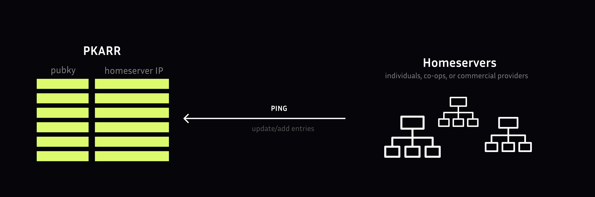

Pubky Core: Open Protocol for Decentralized Web Applications

An open protocol for per-public-key backends for censorship resistant web applications.
Overview
Pubky Core combines a censorship-resistant public-key-based alternative to DNS (PKARR) with conventional, tried-and-tested web technologies. This keeps users in control of their identities and data while enabling developers to build software with the availability of web apps, without the costs of managing a central database.
The Core Philosophy:
“The Web, long centralized, must decentralize; Long decentralized, must centralize.”
Pubky Core provides the infrastructure for building truly decentralized applications where:
- Users control their identities (public keys)
- Users choose where their data lives (Homeserver)
- Applications remain interoperable
- No single entity can control or censor
What is Pubky Core?
Pubky Core consists of three main components:
1. Protocol Specification
The open protocol that defines:
- Public key-based authentication
- Capability-based authorization
- Key-value storage semantics
- Homeserver discovery via PKARR
- RESTful API standards
2. Homeserver Implementation
A production-ready server application that:
- Hosts user data in key-value stores
- Provides RESTful HTTP API
- Handles authentication and sessions
- Publishes to PKARR for discovery
- Supports multiple persistence backends (Files, LMDB, SQL)
- Includes admin and metrics endpoints
3. SDK (Software Development Kit)
Client libraries for developers:
- Rust: Full-featured native SDK
- JavaScript/WASM: Browser and Node.js support
- iOS/Android: Native mobile bindings
- Examples and documentation
Core Concepts
Homeserver
Decentralized data storage nodes that host user data. Each user can choose their homeserver or run their own. Data is stored per public key, and users can migrate between homeservers by updating their PKARR record.
PKARR
Self-issued public keys that function as sovereign, publicly addressable domains. PKARR records published to the Mainline DHT point to homeserver locations, enabling decentralized discovery.
Authentication
Users grant apps scoped access to their data on the Homeserver. Authentication is decentralized - users control their own cryptographic keys with no central identity providers.
Credible Exit
Pubky Core’s distributed architecture provides user autonomy through credible exit between interchangeable components. Users can switch homeservers, applications, or identity managers without losing their data or social graph.
Key Features
Authentication & Authorization
- Public key-based authentication: No passwords, no accounts
- 3rd party authorization: OAuth-style flows with capability tokens
- Session management: Secure, time-limited sessions
- Recovery files: Encrypted backup and recovery
Storage API
- Key-value store: Simple PUT/GET/DELETE operations
- HTTP-based: RESTful API over HTTPS
- Pagination: Efficient listing of large datasets
- Namespace isolation: Separate data spaces per application
Developer Experience
- Multiple language bindings: Rust, JavaScript, Swift, Kotlin
- Comprehensive examples: Step-by-step tutorials
- Testing utilities: Local testnet for development
- Docker support: Easy deployment and testing
Production-Ready
- Multiple persistence backends: Choose between Files, LMDB, or SQL
- Rate limiting: Built-in DDoS protection
- Metrics and monitoring: Prometheus-compatible metrics
- Admin API: Server management and diagnostics
- Event streams: Real-time updates via pub/sub
Architecture
Application Architectures
Pubky App Architectures can be very diverse:
-
- Web client connects directly to a single homeserver
- User data storage and retrieval
- Authentication and sessions
-
- Aggregate data from many homeservers
- Provide discovery and search
- Enable social features
-
- Custom aggregation and inference
- Application-specific logic
- Enhanced features like Semantic Social Graph
Data Flow
User Identity (Public Key)
↓
PKARR Record (Mainline DHT)
↓ Points to
Homeserver Location
↓ Stores
User Data (Key-Value)
↓ Accessed by
Applications (via SDK)
Getting Started
For Developers
Install SDK:
# Rust
cargo add pubky
# JavaScript
npm install @synonymdev/pubky
# See mobile bindings in SDK documentationQuick Example (JavaScript):
import { Pubky } from '@synonymdev/pubky';
// Create client
const pubky = await Pubky.create();
// Sign up (generates keypair)
const { publicKey, secretKey } = await pubky.signUp();
// Store data
await pubky.put(`/pub/myapp/profile`, JSON.stringify({
name: "Alice",
bio: "Decentralized and loving it!"
}));
// Retrieve data
const profile = await pubky.get(`/pub/myapp/profile`);See SDK Documentation for complete guides.
Run Local Homeserver
Using Cargo:
git clone https://github.com/pubky/pubky-core
cd pubky-core/pubky-homeserver
cargo runUsing Docker:
docker build --build-arg TARGETARCH=x86_64 -t pubky:core .
docker run --network=host -it pubky:coreSee Homeserver Documentation for configuration and deployment.
Use Cases
Social Applications
- Decentralized social networks (Pubky App)
- Blogging platforms
- Comment systems
- Forums and communities
Data Sovereignty
- Personal data stores
- Health records
- Document storage
- File sharing
Identity & Authentication
- Decentralized identity (Pubky Ring)
- Single sign-on for web3
- Credential management
Payment Infrastructure
- Payment coordination (Paykit)
- Subscription management
- Decentralized commerce
Target Users
Pubky Core is made for:
- Developers and builders of internet software products
- Startups building decentralized applications
- Open-source contributors
- Privacy-focused services
Pubky App is made for:
- Users interested in social media and online publishing
- People wanting control over their data
- Users seeking alternatives to Big Tech platforms
Resources
Documentation
- Official Docs: pubky.github.io/pubky-core
- Rust API Docs: docs.rs/pubky
- SDK Guide: Complete integration documentation
- API Reference: HTTP API specification
- Examples: Rust and JavaScript tutorials in repository
Repositories
- Main Repository: github.com/pubky/pubky-core
- NPM Package: @synonymdev/pubky
Community
- Telegram: t.me/pubkycore
- Contributors Guide: See repository
- License: MIT
Why Pubky Core?
The Vision
The reward for everyone is a more open, privacy-focused, usable, modular, and secure web.
For Synonym as lead of this project, the goal is to:
- Disrupt Big Tech as an industry
- Gain user recognition through building a decentralized ecosystem
- Position as a major player in online publishing & social media
- Monetize through infrastructure services (similar to Google’s search/aggregation model)
- Introduce users to bitcoin payment infrastructure
Technical Advantages
vs. Traditional Web Apps:
- ✅ User controls data location
- ✅ No vendor lock-in
- ✅ Censorship resistant
- ✅ Privacy by default
vs. Blockchain:
- ✅ No transaction fees
- ✅ Instant operations
- ✅ Standard web tech
- ✅ Scalable storage
vs. P2P Only:
- ✅ Always available (homeservers)
- ✅ Fast access
- ✅ Mobile-friendly
- ✅ Familiar HTTP APIs
Current Status
Production Ready:
- ✅ Homeserver implementation stable
- ✅ Rust SDK mature
- ✅ JavaScript/WASM bindings stable
- ✅ Authentication system complete
- ✅ Multiple persistence backends
Active Development:
- 🚧 Mobile native bindings (iOS/Android)
- 🚧 Event streaming enhancements
- 🚧 Replication and mirroring tools
- 🚧 Privacy features (encrypted data)
Needs Community:
- Mirroring and replication tools
- More homeserver providers
- Application examples
- Integration libraries
- Documentation improvements
Related Technologies
- Pubky Ring: Identity manager app
- Paykit: Payment protocol (WIP)
- Pubky Noise: Encrypted communication (WIP)
- Pubky App: Social media application
Pubky Core provides the foundation for building truly decentralized applications. Join us in creating a more open web!